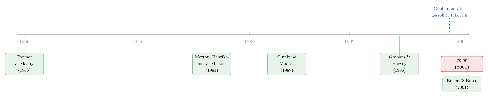

最会择时的高手，换一把月度的尺子就「消失」了
本文读的是 Chance & Hemler (2001, Journal of Financial Economics)：用 30 位职业「市场择时者」在客户账户里真实执行的日度调仓记录，作者发现了稳健、显著、且能扛住交易成本与幸存者偏差的择时能力——可一旦把同一批高手的建议改成按月而非按日观测，这份能力几乎荡然无存。结论不是「他们到底行不行」，而是：你多久看他们一次，决定了你能不能看见。
1 一个被judged了三十年的问题
「基金经理能不能预测市场？」这个问题，学术界几乎已经盖棺定论了：不能。
从 Treynor 和 Mazuy(1966)那篇标题就带着挑衅的 Can mutual funds outguess the market? 开始，一代又一代人用共同基金的收益数据去检验择时能力，得到的答案出奇地一致——平庸，甚至更糟。后来有人换了赛道，去看投资通讯(investment newsletters)。Graham 和 Harvey(1996)盯着 Hulbert Financial Digest 追踪的那些通讯，结论同样冷峻：只有 22.8% 的通讯，其平均收益能跑赢一个同等波动率的「股票+现金」被动组合。择时这门手艺，仿佛是一场集体的自我欺骗。
但如果你足够细心，会发现上面这些研究全都有一个共同的软肋：它们看的，都不是择时者真正做了什么。
共同基金那条线，用的是「隐含建议(implicit recommendations)」——研究者并不知道经理某天到底加仓还是减仓，只能从基金风险(beta)的变化去反推他的择时决策。Alexander 等(1982)早就指出，就算经理什么都没做，基金的系统性风险也可能自己漂移。风险变了，未必是择时；于是「反推」这一步，天然带着测量误差。
投资通讯那条线稍好，至少建议是「显式」写出来的。可写通讯的人，未必真的拿自己的钱按建议下了单。更要命的是时滞：一封通讯从写就到读者收到，一周时间轻易就过去了；作者还能在寄出之后偷偷改主意，付了高价的客户接到「热线电话」被告知变盘，普通订户却蒙在鼓里。
于是一个自然的问题浮出水面：有没有一种数据，记录的是择时者真金白银、在客户账户里实际执行的调仓？ 如果连这样的数据都测不出择时能力，那这门手艺大概真的不存在；可如果测得出，那前三十年的「定论」，恐怕一直在错误的地方找钥匙。
Chance 和 Hemler 找到了这把钥匙。
2 数据：30 个把脖子主动伸过来的人
作者拿到的，是 MoniResearch Corporation 自 1986 年起监测的 30 位职业市场择时者(professional market timers)的信号(signal)记录，时间跨度 1986–1994。所谓「信号」，就是一次显式的择时建议——首次建议，或随后的一次修正;给出信号之后，这个建议就隐式地持续有效，直到下一次信号把它改写。
这批人有几个共同特征，恰恰让他们成为「最理想的嫌疑人」：
- 他们都是注册投资顾问(Registered Investment Advisers)，手握客户授予的有限委托书(limited power of attorney)——客户信任他们的能力，才把部分资金交给他们在一只跟踪股指的免佣基金和一只货币基金之间来回搬。
- 他们自愿披露业绩，说明对自己有信心。
- MoniResearch 直接从客户的基金账户对账单里提取信号、核验执行日期，不允许任何假设的或事后回填(backfitted)的信号。
换句话说，如果世上真有人会择时，那就该是这群人。作者由此把数据从「隐含/通讯」一举推进到了「已知的、已执行的」日度建议——这是它区别于所有前人研究的根本之处。
Table 1 描绘了这些建议的形态。每个信号是「投资于股票的资金比例」，从 0% 到 100%。30 人里有 15 人在任何时点都只押注一个资产类别（要么满仓股票，要么满仓现金）。更有意思的是调仓频率的巨大差异：平均「两次信号间隔的天数」从 6.2 天（27 号择时者）一路拉到 143.5 天（7 号）。这个「频率」，请记住它——它是全文最后那个反转的主角。
为什么这些人偏爱小盘、成长型基金，而不是直接跟踪 S&P 500？作者借 Merton(1981)给了一个漂亮的解释：成功的择时，本质上等价于持有一份保护性看跌期权(protective put)——市场涨时满仓股票，市场跌时满仓现金，相当于给组合白送了一份下行保护。而期权价值随标的波动率上升而上升，于是一个真心相信自己有能力的择时者，自然会去挑波动更大的小盘/成长股，让这份「免费的期权」更值钱。偏好高波动资产，本身就是「我相信我行」的一种自我暴露。
除了择时数据，作者还用了来自 CRSP 的日度股债收益：三个价值加权股票组合（Nasdaq、NYSE/Amex/Nasdaq、S&P 500）作为「市场」的不同代理，以及一个月期国债利率作为「现金」。
3 识别策略：四把尺子、三个基准
怎么把「择时能力」量出来？作者的出发点，是一个朴素到近乎哲学的定义。
设股权风险溢价(equity risk premium)为 \(R_S - R_B\)，即股票收益减去现金收益；设组合权重 \(W\) 为投资于股票的资金比例，\(0 \le W \le 1\)。如果一个择时者完美——他总在 \(R_S - R_B > 0\) 时满仓股票(\(W=1\))、在 \(R_S - R_B < 0\) 时满仓现金(\(W=0\))——那么 \(W\) 与 \(R_S - R_B\) 之间就会呈现正相关。反之，若他随机乱猜，相关性为零。择时能力，就被等价为「组合的股票暴露，是否随股权风险溢价同向变动」。这个朴素的关联，Merton(1981)、Henriksson 和 Merton(1981)、Cumby 和 Modest(1987)都曾经利用过。
作者由此搭起四把尺子，每把都在三个基准组合上各量一遍：
第一把：均值-标准差检验。 给每个择时者算两条收益——「实现收益」\(m(R)\)，和一条波动率相同、但股票权重恒定的「匹配收益」\(m(M)\)。若 \(m(R) > m(M)\)，说明动态调仓真的比「躺平不动」更划算。作者还给出业绩指标 \(\text{Ratio} = [m(R)-m(M)]/\sigma\)，它可以解读为两个组合夏普比率之差，也正是 Graham 和 Harvey(1997)提出的 GH1 测度除以标准差。
第二、三把：Cumby-Modest 回归（无条件 + 有条件）。 这是全文识别的核心。Cumby 和 Modest(1987)把 Henriksson-Merton(1981)那个非参数的列联表(contingency table)检验，推广成一个在更一般分布假设下都成立的回归：把股权风险溢价直接对组合权重回归，
$$ R_{S,t} - R_{B,t} = \alpha + \beta\, W_t + \varepsilon_t $$
斜率 \(\beta > 0\) 就是无条件择时能力的证据。这是「传统」的择时——只问预测准不准，不管你用了什么信息。
可一个自然的追问是：如果择时者只是机械地跟着「人人都看得到」的宏观变量调仓呢？那他的「能力」不过是公开信息的搬运。为了把这部分剥掉，作者跟随 Ferson 和 Schadt(1996)、Ferson 和 Warther(1996)、Graham 和 Harvey(1996)，做出有条件版本：在上面的回归里塞进一组滞后的宏观工具变量 \(Z_{t-1}\)——一个月国债收益率、国债期限利差（十年减三月）、公司债信用利差（Aaa 减 Baa）、以及 NYSE/Amex/Nasdaq 组合的滞后收益与股息率。控制住这些之后还剩下的 \(\beta\)，才是「在公开信息之上」的真本事。
第四把：Graham-Harvey 权重变化检验。 检验调仓的方向与时机是否系统性地踩对了点。
把这条线和共同基金的「隐含」检验对照，识别上的进步一目了然：前人是从 beta 漂移反推择时决策（中间隔着测量误差），这里的 \(W_t\) 是真实执行的权重，直接进回归。识别的源头干净了一大截。
4 主要结果：能力是真的
四把尺子、三个基准量下来，结论高度一致：确实存在显著的择时能力，而且能扛住折腾。
均值-标准差检验里，\(m(R)\) 超过 \(m(M)\) 的次数为：Nasdaq 26 次、NYSE/Amex/Nasdaq 22 次、S&P 500 18 次（共 30 人）。能力相对 Nasdaq 最强、相对 S&P 500 最弱——这与 Kester(1990)「小盘股给择时留的空间更大」的发现一脉相承。最亮眼的是 14 号择时者，他相对 Nasdaq 的 Ratio 高达 0.386；27 号、26 号紧随其后（0.297、0.237）。
无条件 Cumby-Modest 回归里，用 5% 单边检验，显著的择时者数目为 Nasdaq 17 人、NYSE/Amex/Nasdaq 16 人、S&P 500 13 人。几乎没有负的斜率，没有任何一个的 t 值低于 −1。 14 号依旧称王，12、23、26、27 号也极其出色。有条件回归里，至少仍有 11 位择时者显著——说明这份能力不只是对公开宏观变量的机械跟随。
作者还做了两个聪明的对照组。一个是共识择时者(consensus timer)，其建议综合全部 30 人的预测；它同时表现出无条件与有条件能力。另一个是统计择时者(statistical timer)，纯靠标准宏观变量做预测；因为它本就建立在条件变量之上，理论上应只有无条件能力、没有有条件能力——结果正如预期。这两个对照，等于给整套检验装了一组「校准砝码」，让人对方法本身更放心。
更难得的是稳健性。作者逐一拆掉了几个常见的担忧：
- 交易成本与管理费：结论稳健。
- 幸存者偏差(survivorship bias)：1991–1994 年间有
10位择时者退出了数据库；但没有任何人离场后又改名换姓重新进来，所以不存在 Goetzmann 和 Jorion(1999)所说的「重生市场(re-emerging market)」偏差。把死掉的也算进来，能力依然在。 - 1987 年 10 月股灾：作者验证过，结果对这一事件相关的异常值不敏感。
- 业绩持续性：相对业绩会持续，且与调仓频率系统相关——表现最好的那批人（12、14、23、25、26、27 号），恰恰是全样本里换建议最勤的人。
到这里，故事似乎可以收尾了：用最干净的数据，作者为「择时能力存在」翻了案。
5 但真正关键的一步：你多久看他们一次？
可论文最精彩的反转，藏在最后。
作者回过头去，挑出那几位最成功的、调仓最频繁的择时者，做了一件看似无害的小事：不再按日观测他们的建议，而是改成按月观测——就好比你不再天天盯着他的账户，而是每月底才记一次他此刻的仓位。
结果令人错愕：那份原本显著的择时能力，几乎消失了。
为什么？因为这些高手的本事，恰恰体现在频繁的、日内级别的微调上。14 号择时者平均每 6.6 天就动一次，27 号更是 6.2 天。他们在两个月底之间所做的那些精妙转身——也许是在某个剧烈波动的一周里果断减仓、又在反弹前夜悄悄加回——全被「按月快照」这把粗糙的尺子抹平了。 你只看到月初月末两个点，自然看不见中间那条灵动的曲线。
这正与 Goetzmann、Ingersoll 和 Ivkovich(2000)那篇 Monthly measurement of daily timers 的精神遥相呼应：对一个「日度择时者」用「月度尺子」去量，是一种系统性的能力低估。 Chance 和 Hemler 用真实执行的数据，把这个道理钉实了。
于是全文的核心，从「他们到底行不行」，升华成了一个更深刻的方法论命题：
关于择时能力的推断，会随着「研究者多久观测一次建议」而剧烈改变。 前三十年那些「基金经理不会择时」的定论，会不会有一部分，仅仅是因为大家都在用月度、季度的数据，去测量一群本该用日度数据才看得清的人？观测频率，不是无关紧要的技术细节，它直接决定了你的结论。
这一脚，踢在了整个择时文献的地基上。
6 文献脉络
把这条线捋一捋，能看到一个清晰的「数据越来越近、尺子越来越细」的演进。
最早是 Treynor 和 Mazuy(1966)，用一个二次项去捕捉共同基金的择时，开了风气之先。真正奠定理论框架的是 Merton(1981)——他证明成功择时等价于一份保护性看跌期权，给出了均衡定价的视角；同年 Henriksson 和 Merton(1981)配上了可操作的非参数检验（列联表法）。
接着，一个自然的问题是：列联表检验依赖「预测正确的概率与后续收益幅度无关」这个偏强的假设。Cumby 和 Modest(1987)于是把它推广成回归检验，在外汇顾问服务上做了应用——这正是本文识别策略的直接母本。
然后，研究者开始追问「条件」与「数据来源」。Ferson 和 Schadt(1996)、Ferson 和 Warther(1996)把条件信息引入业绩评价；Graham 和 Harvey(1994, 1996, 1997)转向投资通讯这一更显式的数据，却得出「通讯普遍表现平庸」的冷峻结论。

但真正关键的一步，是数据从「隐含/通讯」跨到「已执行」。本文(Chance & Hemler, 2001)站在这个位置上，又被 Goetzmann、Ingersoll 和 Ivkovich(2000)关于「观测频率」的洞见点醒，最终把「能力存在」与「频率决定可见性」两件事一起讲清楚。几乎同时，Bollen 和 Busse(2001)用日度数据重新检验共同基金的择时——也发现了用月度数据看不到的能力。两条独立的证据，指向同一个方法论结论。
在本博客里，与这条线相邻的讨论可参见《会动的 beta：基金经理的「择时本事」，是真的，还是统计模型替他造出来的？》；关于「经理偷偷换仓会让业绩尺子量错」的同源担忧，可参见《基金经理偷偷换了仓，你的「业绩尺子」就量错了》；关于「死掉的基金」如何系统性扭曲推断，则可参见《死人不会说话：当基金数据库只剩下「活下来」的那些基金》。
7 评论与延伸（Q&A + 研究方向）
(a) 几个可能的疑问
Q：这批择时者会不会本身就是「幸存者」——能进 MoniResearch 数据库的，早就是赢家了？
作者正面回应了这点。一是 MoniResearch 拒绝某个择时者，只因怀疑其不诚实、或无法提供核验交易的客户对账单，而非因为业绩；二是 1991–1994 年有 10 人退出，且无人改名重入，所以不存在「重生市场」式偏差。把退出者纳入后能力依旧。当然，「自愿披露」这一环仍可能筛掉沉默的失败者，这是无法完全排除的隐忧。
Q：用三个不同的「市场」基准，到底想防什么？
防的是「结论依赖于你怎么定义市场」。如果只用 S&P 500，可能低估这些偏爱小盘/成长股的择时者；只用 Nasdaq 又可能高估。三个基准一起报，能力相对 Nasdaq 最强、相对 S&P 500 最弱的单调模式，本身就提供了内部一致性证据，也呼应了 Kester(1990)。
Q：为什么不直接用择时者真实买卖的那只基金来算收益，而要用统一的指数基准？
因为那样会把「择时」和「选基(selectivity)」混在一起。不同基金风格各异，基金经理本身又有自己的择时与选股能力，会污染测量。MoniResearch 也并未记录他们实际用的工具。用一个对所有人通用的基准，是把择时能力单独剥离出来的唯一干净办法。
Q：无条件能力和有条件能力，差别到底在哪？
无条件能力只问「预测准不准」，不管你的信息从哪来；有条件能力是在控制住公开宏观信息（利率、利差、股息率等）之后仍然剩下的预测力。统计择时者的对照很说明问题：它纯靠公开变量预测，于是只显示无条件能力、不显示有条件能力——正如理论预期。真有私人信息或独特技艺的人，才会在有条件检验里依然显著。
Q：那个「月度尺子让能力消失」的反转，会不会只是样本变小、统计功效下降的把戏？
这是最该警惕的替代解释，也是后续最该夯实的地方。作者的论证逻辑是：消失发生在调仓最频繁的那批人身上，而他们的超额收益本就来自月内的高频微调，按月快照把这些转身抹平了——这是机制层面的解释，而不仅仅是「n 变小、t 值变低」。但严格说，要完全把「功效下降」和「真实信息损失」分开，还需要更精细的设计（见下）。
Q：这对「市场有效」意味着什么？是不是说市场无效？
不必走那么远。这些人有有限委托书、自愿披露、偏好高波动资产，是一群高度自选择的「最可能有能力者」；而且能力相对最广基准(NYSE/Amex/Nasdaq)和 S&P 500 时明显减弱。更稳妥的读法是：在小盘/成长这类可预测性更高（收益自相关更强）的角落里，少数人凭高频调仓榨出了可观的超额收益——这与「大盘整体高度有效」并不矛盾。
(b) 几个可能的研究问题与提案
1. 把「观测频率」这把尺子搬到公司债与信用市场。 - 【经济故事】公司债流动性差、成交稀疏，很多债一周才动几笔。如果一个信用择时者（在投资级与高收益之间、或在不同久期之间轮动）真有本事，那么用月度或季度的持仓快照去评价他，会不会和本文一样系统性地抹平他的能力？信用市场的「频率惩罚」可能比股票更严重。 - 【可行性】中。需要执行级的持仓/调仓数据（如保险公司 NAIC 申报、债券基金的高频持仓），加上 TRACE 的日度成交。识别上可借用本文的 Cumby-Modest 框架，把「市场」换成信用利差因子。难点在拿到足够高频的真实调仓记录。
2. 外资持有人是不是更「高频」的择时者？ - 【经济故事】外资常被指责追涨杀跌、是「噪声」。但若把他们在新兴市场的真实买卖按日观测，会不会发现一部分外资其实在做有效的高频择时，只是被月度的国际资本流数据掩盖了？这能把「外资是蝗虫还是聪明钱」的争论，落到「观测频率」这个新维度上。（与此相关的争论可参见《外资真有「信息劣势」吗？——首尔交易簿里那 37 个基点的真相》。） - 【可行性】中高。韩国、台湾等市场有逐笔、带投资者类型标签的交易数据，天然适合做日度 vs 月度的频率对比。识别清晰，数据可得性是主要门槛。
3. 直接量化「频率惩罚」的大小，做成一条可推广的修正公式。 - 【经济故事】本文给出了「按月看会消失」的定性反转，但没有给出一条「把月度估计还原成日度真值」的定量映射。如果能用蒙特卡洛模拟 + 真实日度数据，刻画出「能力损失」如何随调仓频率、持有期、波动率变化，业界就有了一把校正历史月度业绩评价的尺子。 - 【可行性】高。纯方法论 + 模拟，配本文这类日度执行数据即可，不依赖稀缺数据。Goetzmann-Ingersoll-Ivkovich(2000)已搭好理论骨架，把它实证化、参数化是自然的下一步。
4. 「保护性看跌期权」框架下，择时者的偏好与崩盘风险。 - 【经济故事】既然成功择时等价于一份看跌期权、且偏好高波动资产，那么这些人是否在系统性地承担（或对冲）尾部风险？他们的「能力」在平静期与崩盘期是否截然不同？把他们的收益拆成「类期权」分量，能检验 Merton(1981)框架的实证含义。 - 【可行性】中。需要把日度收益对市场及其下行分量做非线性回归，数据要求与本文相当，识别上需小心区分「真择时」与「卖波动率」两种看起来相似的收益形态。
8 我的判断与参考文献
贡献。 这篇论文的分量，不在「找到了显著的择时能力」——单是这一条，容易被解读为一群高度自选择的赢家加上小盘股的可预测性。真正的贡献，是那个干净利落的反转：观测频率是推断的隐含参数。 把一个日度择时者放到月度尺子下，能力就蒸发。这等于回头质问了前三十年那一长串「经理不会择时」的结论——它们里面有多大比例，只是被粗糙的数据频率给「测没了」？再加上「已执行建议」这一前所未有的数据，以及共识/统计择时者这组校准对照，全文在方法上相当扎实。
对识别的担忧。 三点。其一，自选择：自愿披露、能提供对账单、有客户托付的人，本就是一个偏向赢家的样本，「自愿」这道门可能筛掉了沉默的失败者。其二，频率反转的功效问题：要彻底把「真实信息损失」与「月度样本变小导致 t 值下降」分开，还需要更精细的设计——这是我最想看到被夯实的一环。其三，基准与工具变量的稳健性：有条件检验里那组宏观工具变量的选择（利差、股息率等）若改用别的集合，剩下的有条件能力会不会缩水，值得再压一压。
后续想看什么。 我最想看的，是把「频率惩罚」从定性反转推进到定量校正——给出一条能把历史上无数月度业绩评价「还原」到日度真值的映射（提案 3）。其次，是把这套「观测频率决定可见性」的逻辑，搬到公司债与外资持有人这些天然低频、成交稀疏的市场里去（提案 1、2）：如果连股票里都有这么大的频率惩罚，那在公司债市场，我们对「谁有择时/择券能力」的判断，恐怕一直戴着一副被采样频率磨花了的眼镜。
参考文献
- Alexander, G., Benson, P., Eger, C. (1982). Timing decisions and the behavior of mutual fund systematic risk. Journal of Financial and Quantitative Analysis 17, 579–602.
- Bollen, N., Busse, J. A. (2001). On the timing ability of mutual fund managers. The Journal of Finance 56, 1075–1094.
- Chance, D. M., Hemler, M. L. (2001). The performance of professional market timers: daily evidence from executed strategies. Journal of Financial Economics 62, 377–411.
- Cumby, R., Modest, D. (1987). Testing for market timing ability: a framework for forecast valuation. Journal of Financial Economics 19, 169–189.
- Ferson, W., Schadt, R. (1996). Measuring fund strategy and performance in changing economic conditions. The Journal of Finance 51, 425–462.
- Ferson, W., Warther, V. (1996). Evaluating fund performance in a dynamic market. Financial Analysts Journal 52(Nov/Dec), 20–28.
- Goetzmann, W., Ingersoll, J., Ivkovich, Z. (2000). Monthly measurement of daily timers. Journal of Financial and Quantitative Analysis 35, 257–290.
- Goetzmann, W., Jorion, P. (1999). Re-emerging markets. Journal of Financial and Quantitative Analysis 34, 1–32.
- Graham, J., Harvey, C. (1996). Market timing ability and volatility implied in investment newsletters' asset allocation recommendations. Journal of Financial Economics 42, 397–422.
- Graham, J., Harvey, C. (1997). Grading the performance of market-timing newsletters. Financial Analysts Journal 53(Nov/Dec), 54–66.
- Henriksson, R., Merton, R. (1981). On market timing and investment performance. II. Statistical procedures for evaluating forecasting skills. The Journal of Business 54, 513–533.
- Kester, G. (1990). Market timing with small versus large-firm stocks: potential gains and required predictive ability. Financial Analysts Journal 46(Sep/Oct), 63–69.
- Merton, R. (1981). On market timing and investment performance. I. An equilibrium theory of value for market forecasts. The Journal of Business 54, 363–406.
- Newey, W., West, K. (1987). A simple, positive semi-definite, heteroskedasticity and autocorrelation consistent covariance matrix. Econometrica 55, 703–708.
- Treynor, J., Mazuy, K. (1966). Can mutual funds outguess the market? Harvard Business Review 44, 131–136.
- Wagner, J., Shellans, S., Paul, R. (1992). Market timing works where it matters most…in the real world. The Journal of Portfolio Management 18(Summer), 86–90.